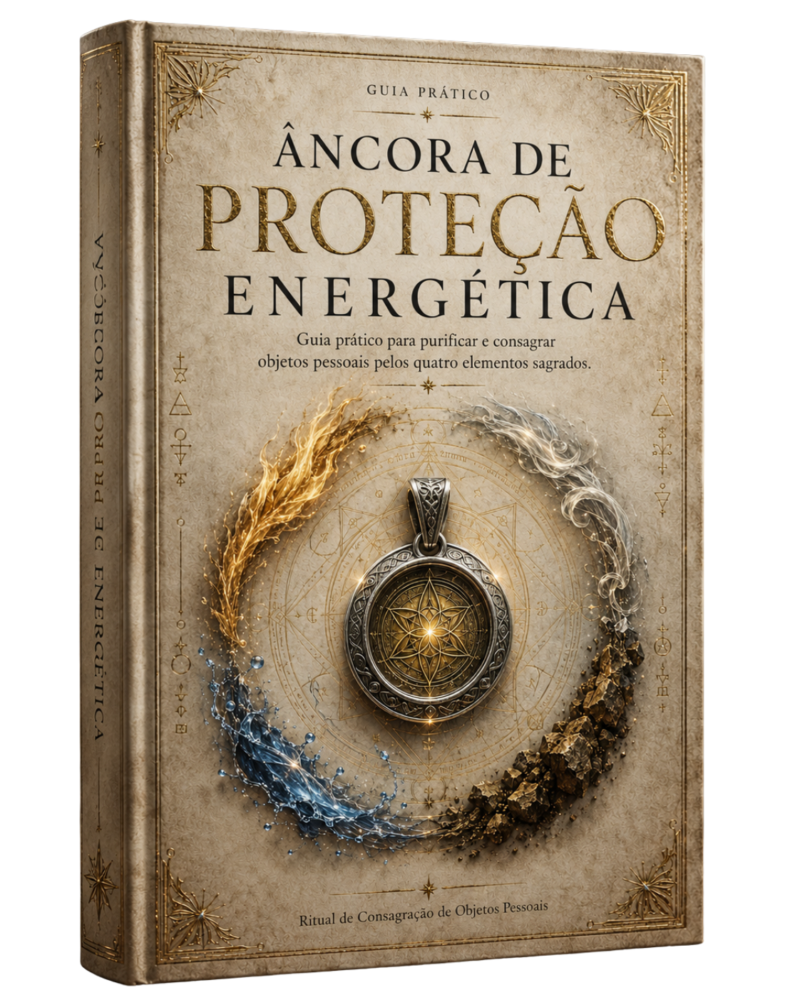
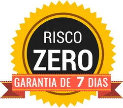

Transforme Objetos Pessoais em Amuletos de PROTEÇÃO ESPIRITUAL Contra a Inveja e outras energias inferiores
Descubra como consagrar um objeto pessoal ou uma ferramenta de trabalho pelos quatro elementos sagrados, criando uma âncora simbólica de proteção, paz e harmonia em 35 minutos, na sua casa.
— mesmo que você nunca tenha feito um ritual ou prática mística na vida
- Retire da ferramenta as energias negativas acumuladas durante contatos com pessoas e ambientes diferentes.
- Firme sobre a ferramenta uma intenção de proteção que dificulta a aproximação de novas influências inferiores.
- Volte a atender, produzir e decidir com mais segurança energética durante sua rotina profissional.
A sobrecarga invisível que rouba sua energia diária
Você começa o dia em paz, mas sente suas energias mudarem depois de um atendimento, uma conversa difícil ou depois de passar algumas horas em um lugar cheio de tensão e pessoas reclamando.
- Uma sensação de peso aparece no corpo, embora nada visível tenha acontecido.
- Seu foco diminui justamente quando você ainda precisa atender, decidir ou produzir.
- Sua tensão e cansaço continuam no corpo mesmo após o fim da interação
Quando esses sinais se repetem, o custo aparece na paz que você perde, na presença que falta e no trabalho que rende menos.
(Você não precisa continuar terminando seus dias esgotado sem entender o motivo.)
Pare de levar o cansaço do trabalho para casa
O expediente termina, mas as influências acumuladas podem ocupar as horas que deveriam restaurar sua energia.
- Você chega em casa com menos disposição para conversar, descansar ou estar presente com quem importa.
- Você acorda no dia seguinte antes de recuperar completamente a paz e a firmeza que precisa para trabalhar.
- Você hesita em conversas, adia decisões e deixa oportunidades passarem justamente quando seus resultados dependem da sua atuação.
Interromper esse ciclo devolve o descanso à sua noite e mais segurança ao seu próximo dia de trabalho.
Quero interromper esse ciclo →(Seu tempo de descanso com quem você ama é precioso demais para ser roubado pelo peso do expediente.)
O perigo de usar ferramentas carregadas de negatividade
Você cuida das energias do corpo e sente alívio. Na manhã seguinte, volta a segurar a mesma ferramenta de trabalho que participou de cada contato do dia anterior.
A ferramenta continuou ali enquanto você lidava com pessoas ansiosas, conversas pesadas e ambientes estressantes ao longo do dia. Enquanto você limpou as energias do corpo, o acúmulo conservado nela permaneceu sem purificação — e, ao voltar para suas mãos, pode reaproximar as influências que você tentou deixar para trás.
Por isso, o alívio dura só até você pegar a mesma ferramenta na manhã seguinte para trabalhar.
Quero proteção completa →(De nada adianta cuidar da sua mente se a ferramenta que você segura o dia todo continua carregada.)
Suas ferramentas acumulam a tensão dos seus clientes
Tesouras, pentes, chaves, instrumentos de atendimento e outros objetos de trabalho atravessam pessoas e ambientes justamente enquanto você atende, produz e gera renda.
- Contato após contato, a ferramenta pode conservar marcas energéticas de diferentes situações.
- Entre um dia e outro, essas energias permanecem ligadas ao objeto que voltará para suas mãos.
- A cada novo uso, o peso acumulado volta para as suas mãos no trabalho.
Purifique sua ferramenta para interromper o contato com as energias passadas e abrir espaço para uma nova proteção.
Quero limpar minha ferramenta →(Sua ferramenta de trabalho deve gerar sua renda, não guardar a tensão de quem passou por você.)
Bloqueie a inveja nos seus objetos de trabalho
Você purifica a ferramenta, realiza a consagração ritualística na sua casa e transforma o objeto em um amuleto de proteção.
- Você direciona um propósito claro e fortalece na ferramenta a intenção de proteção, paz e harmonia.
- Você sela essa energia no objeto para dificultar que influências inferiores se fixem novamente.
- Sua ferramenta mantém a intenção de proteção que você escolheu e firmou durante o ritual.
Em cada novo contato, você mantém sua intenção de proteção perto de si e trabalha com mais segurança, paz e harmonia.
(Transforme o objeto que você já usa no seu maior escudo diário de proteção.)
Mantenha sua proteção durante cada atendimento difícil
Durante os próximos 12 meses, você trabalha com um amuleto que mantém a intenção de proteção, paz e harmonia que você escolheu e firmou.
- Você começa o trabalho com a segurança de ter preparado energeticamente o objeto que permanecerá em suas mãos.
- Você atravessa cada novo contato com uma ferramenta protegida contra a fixação de novas energias inferiores.
- Você encerra o expediente com menos receio de levar para casa, por meio da ferramenta, o peso energético das interações do dia.
Em vez de esperar o cansaço bater para buscar purificação, você já começa o atendimento protegido pelo próprio objeto que segura nas mãos
Quero proteção no trabalho →(Esteja blindado antes mesmo da primeira conversa difícil do seu dia começar.)
Leve essa mesma blindagem para seus objetos pessoais
Depois da primeira consagração, você domina o ritual que transforma outros objetos pessoais ou ferramentas de trabalho em amuletos de proteção. Em cada novo ritual, você escolhe a intenção que deseja firmar.
Você consagra pulseira, anel, cordão ou relógio — acessórios que passam a carregar a intenção de proteção perto do corpo; transforma sua aliança em lembrança constante de paz e harmonia; e faz do seu acessório uma âncora de proteção presente em cada momento do dia.
Você realiza uma consagração agora e leva consigo o conhecimento para criar novas âncoras de proteção nos próximos anos.
(Aprenda a técnica uma única vez e proteja qualquer acessório que você usa no corpo.)
Economize anos de estudo com um método prático
Para aprender essa sequência por conta própria, você teria de estudar livros místicos extensos, como o Pangrimorium, uma obra de 657 páginas. Depois da leitura, ainda faltaria transformar ensinamentos separados sobre purificação, quatro elementos e consagração em um ritual simples para realizar na sua casa.
- Primeiro, encontrar no meio de centenas de páginas apenas o que serve à consagração da sua ferramenta de trabalho.
- Depois, entender palavras escritas para estudantes de misticismo e descobrir a função de cada parte.
- Por fim, organizar a ordem correta para retirar energias passadas antes de firmar proteção, paz e harmonia.
Com um único guia, você evita o trabalho pesado de interpretar ensinamentos dispersos. Em 35 minutos, escolhe o objeto, segue a sequência pronta e o transforma em uma âncora alinhada à sua intenção de proteção.
Quero o atalho →(Por que perder meses decifrando textos complexos se você pode aplicar o ritual correto em 35 minutos?)
Ative os 4 elementos a favor da sua paz
Durante 35 minutos, você percorre quatro vias de purificação e proteção. Cada elemento atua de acordo com sua própria qualidade ritualística.
Dispersa o acúmulo de energia para abrir espaço ao novo.
Queima as marcas do passado para fortalecer a proteção.
Purifica os resíduos emocionais para harmonizar a intenção.
Sela o ritual no objeto para firmar a estabilidade.
Você segue cada etapa sabendo o que está retirando, o que está acrescentando e como cada movimento prepara a ferramenta para sustentar sua proteção.
Quero ativar os elementos →(Aprenda exatamente o que fazer em cada etapa, sem incertezas ou improvisos.)
Descubra a diferença entre limpar e proteger objetos
Uma limpeza isolada atua sobre o que a ferramenta acumulou até aquele momento. A consagração prepara o objeto para as influências que ainda encontrará durante o trabalho.
- A purificação retira as energias conservadas nos contatos anteriores.
- A consagração acrescenta uma intenção específica de proteção, paz e harmonia.
- O selamento mantém essa nova função ligada à ferramenta durante os próximos 12 meses.
Você purifica as energias passadas e firma uma nova proteção sobre sua ferramenta para os próximos contatos.
Quero completar a proteção →(Não basta tirar o acúmulo do passado; garanta que novas energias não voltem a se fixar.)
Proteja sua energia com um ritual simples

Com o Guia Prático do Ritual de Consagração de Objetos Pessoais, você escolhe o objeto, firma sua intenção de proteção e realiza a própria consagração na sua casa.
Você separa os materiais certos de uma só vez, encontra cada palavra e movimento na ordem certa e avança da primeira purificação ao selamento final sabendo, a cada instante, qual ação realizar em seguida.
Todo o trabalho pesado de reunir, interpretar e ordenar as etapas já foi feito. Você escolhe o objeto, abre o guia, concentra sua atenção na energia que deseja firmar e segue o passo a passo até transformá-lo em um amuleto de proteção.
(Tenha em mãos o passo a passo exato para realizar sua primeira consagração hoje.)
Garanta seu acesso vitalício ao método completo
Você domina o ritual e leva esse conhecimento místico para sua vida, transformando outros objetos pessoais ou ferramentas de trabalho em amuletos de proteção espiritual contra a inveja.
Pagamento único — você acessa a sequência completa de imediato.
Consultas ilimitadas — volte às orientações a cada novo objeto consagrado.
Sem Renovação — após 12 meses, use o mesmo guia sem nova compra.
Sem recorrência — nenhuma assinatura ou cobrança automática.
(Um investimento único e irrisório para manter sua proteção ativada para sempre.)
🛡️ Acesso imediato após a confirmação

Risco Zero — Garantia Incondicional de 7 Dias
Seus atendimentos mais leves e sua mente em paz — ou o seu dinheiro de volta.
Experimentar algo novo não deveria vir acompanhado de dúvida. Por isso, a decisão de proteger a sua energia hoje é 100% livre de riscos para você.
Você tem 7 dias inteiros para acessar o Guia Prático Âncora de Proteção Energética, aplicar o passo a passo simples na sua ferramenta de trabalho e sentir na pele a diferença logo nos primeiros usos.
Faça o teste por 7 dias e perceba na prática:
- Proteção Real: sinta-se blindado contra as energias pesadas de ambientes e pessoas que costumavam afetar o seu equilíbrio pessoal ou profissional.
- Leveza no Atendimento: termine seu dia de trabalho com a sensação de dever cumprido, em vez da exaustão emocional de quem “carregou o mundo nas costas”.
- Foco e Clareza: mantenha sua mente limpa e presente para decidir, produzir e atender com total segurança.
Como funciona a Garantia?
É muito simples: se por qualquer motivo — ou mesmo sem motivo nenhum — você sentir que o guia não entregou a leveza e a proteção que você buscava, basta enviar uma única mensagem para o meu suporte dentro do prazo de 7 dias.
Nós devolvemos 100% do seu investimento. Sem letras miúdas, sem perguntas indiscretas e sem complicações.
Ou você sente a sua energia verdadeiramente protegida na prática... ou não paga nada por isso.
Sim, quero experimentar a proteção sem risco por 7 dias →(Sinta a leveza na sua rotina na prática — ou receba todo o seu dinheiro de volta.)
Perguntas frequentes
O que é o ritual de purificação e consagração de objetos de trabalho e para que ele serve?
É uma prática simbólica que prepara uma ferramenta de trabalho para funcionar como uma âncora de proteção, paz e harmonia.
Primeiro, a purificação trabalha as influências associadas aos ambientes, pessoas e situações com as quais o objeto entrou em contato. Depois, a consagração estabelece uma intenção específica de proteção e sela essa intenção na ferramenta.
O objetivo é permitir que você use um objeto já presente na sua rotina como um amuleto simbólico, recordando a intenção firmada sempre que o utilizar. O método ensina a realizar esse processo por meio do Ciclo dos Quatro Elementos: Ar, Fogo, Água e Terra.
Preciso ter experiência prévia com misticismo ou magia para aplicar a Âncora de Proteção Energética?
Você não precisa ter experiência anterior.
O ritual foi organizado para iniciantes e apresenta previamente os materiais, a preparação do ambiente, os movimentos, as palavras ritualísticas, o selamento e o encerramento.
Você acompanha uma sequência definida do começo ao fim, em vez de reunir orientações soltas ou improvisar durante a prática.
Qual é a diferença entre limpar, purificar e consagrar uma ferramenta de trabalho?
Limpar significa retirar sujeira, resíduos e impurezas físicas da ferramenta.
Purificar significa trabalhar simbolicamente as influências energéticas associadas aos contatos anteriores do objeto.
Consagrar significa atribuir uma intenção espiritual específica à ferramenta, transformando-a em uma âncora simbólica de proteção.
A limpeza cuida da parte física. A purificação trabalha o que veio antes. A consagração prepara o objeto para carregar a intenção escolhida nos próximos contatos.
Quais tipos de objetos e ferramentas de trabalho podem ser consagrados com este método?
O método pode ser aplicado a objetos significativos que você utiliza com frequência e a ferramentas manuais que participam diretamente da sua rotina profissional.
Entre as possibilidades estão:
- tesouras, pentes e máquinas utilizadas por barbeiros e cabeleireiros;
- instrumentos empregados em atendimentos terapêuticos;
- ferramentas de artesanato, estética ou trabalho técnico;
- baralhos, cristais e outros instrumentos de práticas espirituais;
- anéis, pulseiras, cordões, alianças, relógios e outros acessórios;
- objetos antigos, herdados, recebidos de outras pessoas ou um objeto seguro no carro (como chaveiro ou pingente).
O mais importante é escolher um objeto seguro, durável e que tenha uma relação real com sua vida pessoal ou profissional. Líquidos, terra, sal, óleo ou fumaça nunca devem ser aplicados diretamente sobre aparelhos eletrônicos.
Com que frequência devo refazer a purificação e a proteção da minha ferramenta?
A frequência recomendada para refazer a consagração completa é de aproximadamente 12 meses.
Esse período funciona como um ciclo de renovação da intenção firmada no objeto. Você utiliza o mesmo guia para realizar novamente o processo, sem assinatura, cobrança recorrente ou necessidade de comprar o material outra vez.
Ao escolher outro objeto ou adquirir uma nova ferramenta, você também pode consultar o guia e realizar uma nova consagração específica para ela.
Quanto tempo leva para fazer o ritual de proteção e quais materiais são necessários?
O ritual completo leva aproximadamente 35 minutos.
Os materiais principais incluem o objeto escolhido e representações seguras dos quatro elementos:
- um incenso para o Ar;
- uma vela para o Fogo;
- um recipiente com água;
- uma pequena porção de terra;
- símbolos de proteção compatíveis com suas convicções.
O guia apresenta a lista completa, a organização do espaço, as substituições permitidas e a ordem de utilização de cada elemento.
A vela deve permanecer em uma superfície segura e nunca pode ser deixada sem supervisão. Quando o uso de chama não for adequado, ela pode ser substituída por uma luz elétrica.
O ritual de limpeza energética pode atrair energias negativas ou falhar se for feito errado?
O método apresentado no guia não envolve evocação de espíritos, entidades desconhecidas ou práticas avançadas.
Ele utiliza intenção, visualização, elementos simbólicos e uma sequência formal de abertura, operação e encerramento. Caso você se distraia, esqueça uma frase ou interrompa uma etapa, pode consultar novamente o guia e retomar com tranquilidade. Um erro simples não significa que você tenha atraído alguma influência negativa.
O cuidado mais importante é seguir as orientações práticas, encerrar formalmente o ritual e utilizar vela, incenso e demais materiais com responsabilidade. O objeto funciona como símbolo da intenção firmada, e não como garantia de proteção absoluta ou poder sobrenatural infalível.
Como recebo o Guia Prático Âncora de Proteção Energética após a confirmação do pagamento?
Após a confirmação do pagamento, o acesso ao guia é liberado digitalmente. Você poderá baixar o PDF e mantê-lo disponível para consultar durante a primeira consagração, em novos objetos e na renovação anual.
Os materiais físicos utilizados no ritual não acompanham o produto. Você acessa as instruções, escolhe o objeto e providencia os itens indicados no próprio guia. O acesso é permanente e não possui cobrança recorrente.
Mude a energia da sua rotina hoje mesmo
Hoje, você escolhe um objeto com significado, abre o guia e realiza sua primeira consagração na sua casa.
- Ao concluir o ritual, você reconhece na mesma ferramenta a intenção de proteção que acabou de firmar.
- No primeiro contato do dia seguinte, você começa o trabalho com a segurança de ter completado seu cuidado energético.
- Durante uma interação difícil, o amuleto mantém perto de você a proteção, a paz e a harmonia que escolheu preservar.
- Ao encerrar o expediente, você volta para casa sabendo que incluiu a ferramenta no cuidado que antes terminava no próprio corpo.
Depois do primeiro objeto, o conhecimento permanece com você para realizar novas consagrações e renovar o ritual após 12 meses usando o mesmo guia.
Quero consagrar agora(O seu próximo dia de trabalho pode ser infinitamente mais leve. A escolha está nas suas mãos.)